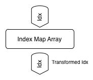
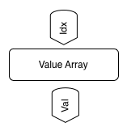
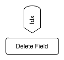
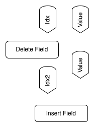
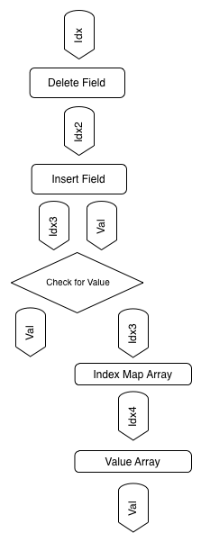
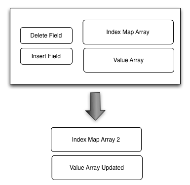

DynamicData
Persistent Multithreaded Array like Data Structure
Introduction
Dynamic Data (DD) is a reference implementation for a persistent on disc Concurrent Mapped Vector CMV. Please read on further down for a definition of a CMV data structure. The DD data structure is useful in situations where a big number of objects has to be stored in an array like data structure and fast random read access is needed, as well as frequent insert and delete operations with minimal lock time. Usually B-trees or Skip Lists are employed in these kind of situations, with the disadvantage that random reads have a complexity of O(log(n)), where the DD data structure can achieve O(0) complexity on random reads in many situations where reads are much more frequent then delete and write operations.
Setup
DD is a header file only library which was developed on OSX and Xcode. The code is standard C++11 compatible, the only non stl component used is , which is used to mmap binary files on disc. We suppose that the library should run on most Unix systems, but it was only tested on OSX.
For basic usage of the library have a look at Demo.h. The only important class for user code is DDIndex. This class manages the array and keeps it persistent on disc. The persistent data will be stored relatively to the executable in a folder called data. On succedent startups the different ids passed to the constructor of DDIndex will identify the data files or create new ones if they do not exist. Its probably wise to remove all the data in the data folder if data has to be removed manually or data inconsistencies can happen.
We believe that this kind of data structure did not exist until now (at least we could not find any similar work at all). Thats why we gave it the name Concurrent Mapped Vector. It might not be the most pretty name, but it should reflect that what we have is an array like data structure which can only work effectively in a multithreaded environment.
Concurrent Mapped Vector
Introduction
The Concurrent Mapped Vector (CMV) is a data structure, which exposes a similar subset of operations found in vector classes like in the std::vector class.
This is the interface CMV exposes:
y_type get(size_type idx) // random access
void insertIdx(size_type idx, y_type yvalue) // random insert
void deleteIdx(size_type idx) // random delete
Here size_type is an unsigned integral type and y_type is a scalar value or a struct.
It is important to mention, that the CMVs indexes can not be used as keys like in a Hash Map. The following example illustrates this.
//pseudocode
//let d be an instantiation of D with int value types. Let d contain 5 elements.
//insert 6 at index 3
sk.insert(3, 6);
//insert 5 at index 3
sk.insert(3, 5);
//get index 4
int value = sk.get(4);
The return value will be 6, because 5 was inserted at index 3 so the value 6 moved one index up.
The question remains why one should bother to implement a simplified vector like data structure like the CMV. The answer lies in the complexity to calculate these operations. The CMV can outperform vector and list like data structures in many situations.
The CMV works transactionally and multithreaded. This means that it always accumulates a certain number of operations, these are the pending elements. Other background working threads then incorporate these pending operations into the core memory of the CMV data structure, which can be in RAM or on disc.
The complexity for all the operations the CMV exposes, can be described as follows. Let P_N be the pending elements. Then the complexity for all operations is
O(log(P_N))
This means that if the background working threads are fast enough to keep P_N small, then the complexity can become constant O(0).
In the current implementation the operations needed to incorporate P_N pending elements is
BACKGROUND_OPS = P_N + N
where N is the number of elements currently contained in CMVs core memory. We are not sure yet if BACKGROUND_OPS can be even more optimized like in
BACKGROUND_OPS = log(P_N +N)
Because of fast multithreaded hardware one can imagine that the frequency operations can occur on CMV can be quite high and still P_N can be kept small and constant.




